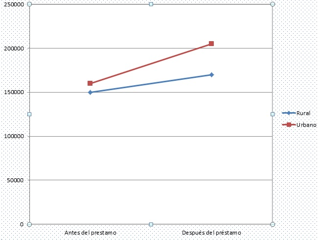

Empieza la casa por los cimientos: El poder de tu 'small data' para la inclusión financiera

Durante los últimos meses hemos observado la creciente popularidad del tema de big data (grandes bases de datos) a través de evento académicos, publicaciones e iniciativas empresariales a lo largo de la región. Definitivamente es un tema que está tomando cada vez más relevancia: hacer uso de las grandes bases de datos y desarrollar productos financieros a partir de las mismas. Pero si nos permiten, queremos dar un paso atrás y mirar un poco hacia adentro de las instituciones que proveen servicios financieros: ¿Cómo hacen ustedes para utilizar las "pequeñas" bases de datos ya generadas a partir de sus propias operaciones?
La experiencia de Triple Jump con small data

Durante el foro titulado “El poder de los datos para la inclusión financiera: oportunidades, desafíos y ética”, Triple Jump presentó su experiencia con los datos generados a través de las instituciones microfinancieras (IMF) en las que invierte. Estas bases de datos generadas a nivel institucional es lo que, en adelante, denominaremos “small data”. Triple Jump realizó un estudio utilizando los datos de las microfinancieras para conocer el impacto social de las instituciones que están en su cartera- por ejemplo entender si los préstamos de las IMF tenían el mismo impacto en el valor neto de las microempresas rurales y urbanas (ver gráfica arriba). Uno de los hallazgos de este análisis puso en evidencia la falta de uso de esta información por parte de las IMF, salvo para lo concerniente al reporte de información financiera. Aún cuando los temas sociales están dentro de las declaraciones de principios de las IMF, ellas no usan los datos que surgen de sus operaciones para evaluar el cumplimiento de esos principios, o para identificar cómo cumplirlos mejor.
Al hacer un análisis sobre el porqué no se utiliza mejor esta información se encontró que para las IMF existen desafíos tanto a nivel de la infraestructura tecnológica como a nivel de la superestructura analítica que no permiten analizar los datos recopilados y tomar decisiones con base en los datos. Dos ejemplos:
1) Almacenamiento de datos. Al momento de aprobar un nuevo préstamo a un emprendedor, se sobre-escribe sobre los datos anteriores, lo que no le permite a una IMF ver tendencias.
2) Capacidad para analizar los datos. Las IMF tienen muchos datos, pero su personal tiene experiencia en analizar riesgo y ofrecer créditos, no en analizar grandes bases de datos.
Se intentó hacer frente a estas realidades ofreciendo asistencia técnica para un mejor manejo de datos. ¿Y saben que pasó? No había interés. La percepción generalizada por parte de las IMF es que esto constituía una carga – “excesiva” – adicional a las tareas ya requeridas para la rendición de cuentas.
¿Qué lecciones podemos extraer de esta experiencia y cómo se puede explotar el potencial del small data que se genera en la oferta de servicios financieros?
Triple Jump encontró, por un lado, que los datos generados pueden no sólo contribuir a hacer evidente el cumplimiento de los objetivos sociales, sino también a diseñar mejores productos que respondan al uso y necesidades de los clientes. Se pueden utilizar estos datostambién para aminorar los riesgos que se incurren en la intermediación de productos financieros, al analizar el comportamiento de los clientes en relación al cumplimiento de sus obligaciones.
Entonces, ¿Cómo hacer uso de estas pequeñas bases de datos?
- Una opción es que las IMF incorporen a personal de nivel intermedio que sepa analizar sus bases de datos. A la par sería importante mostrar a los oficiales de crédito que la captura y uso de los datos mejorará sus resultados, y no necesariamente reemplazará sus puestos.
- Otra opción sería aprovechar los mecanismos institucionales ya existentes – holdings, redes de microfinanzas o federaciones con este mismo fin. Aprovechando un conjunto de datos más amplio y evaluando las opciones posibles para intercambiar o compartir información.
- Finalmente, otro mecanismo que ya está en funcionamiento es el desarrollado de empresas especializadas en el análisis de datos como Cignifi en América Latina, o First Access en África.
Nos gustaría saber la manera en la que tu mercado emplea iniciativas que promueven la utilización de datos para predecir con más exactitud cuál es la capacidad de pago de los clientes, prevenir el sobrendeudamiento y mejorar el diseño de productos a los clientes de nuestras instituciones.
En la actualidad las posibilidades están abiertas al modelo que logre mejores sinergias entre productores de datos, generadores y analistas de información. Lo único cierto es que hay una gran oportunidad en explotar los datos, y que no tenemos que apelar a grandes bases de datos para poder diseñar mejores productos y estrategias de manejo de riesgo. Ya hay información en nuestras manos que debería ser analizada.
Les dejamos las grabaciones y las presentaciones del foro “El poder de los datos para la inclusión financiera: oportunidades, desafíos y ética”, que organizamos desde el FOMIN para su revisión (Algunas en inglés y otras en español).